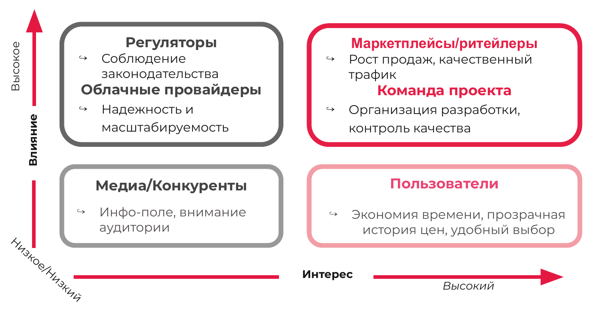

Проблематика
- Потеря времени: Пользователь тратит от 30 до 60 минут на поиск и ручное сравнение товарных позиций.
- Непрозрачные цены: Наличие искусственных скидок и ценовых манипуляций со стороны продавцов.
- Информационный шум: Избыточное количество неструктурированных отзывов и рейтингов.
Наше решение
Основной целью проекта является создание цифрового помощника, обеспечивающего:
- Агрегацию предложений различных маркетплейсов в едином интерфейсе.
- Мониторинг и отображение истории цен за периоды в 30, 90 и 180 дней.
- Выдачу рекомендаций на основе AI (целесообразность покупки, ожидание снижения цены).
Стейкхолдеры проекта
Для определения контура взаимодействия проекта была разработана аналитическая карта, классифицирующая стороны по уровню их влияния и заинтересованности.

Целевая аудитория
Рациональные онлайн-покупатели в возрасте от 18 до 45 лет, активно использующие цифровые платформы и заинтересованные в верификации реальной выгоды от скидок.